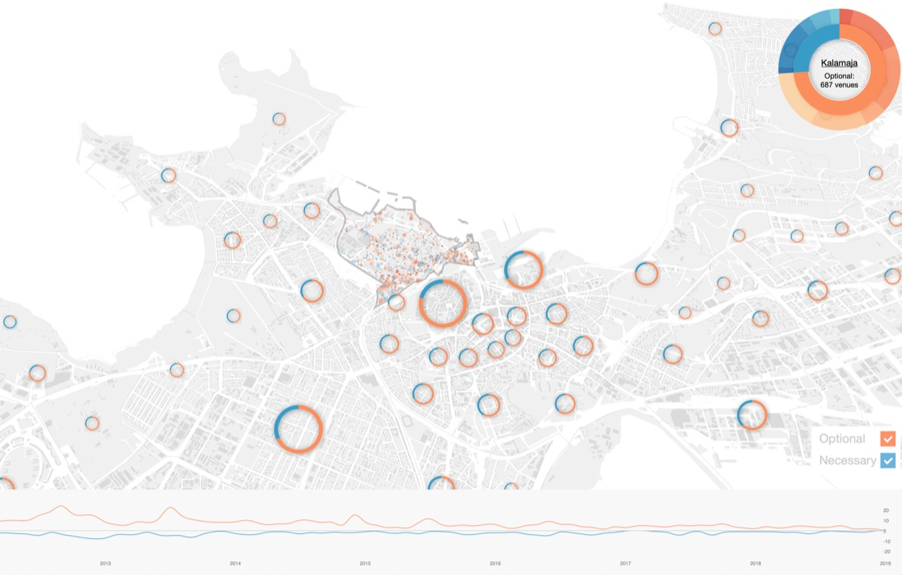

metaLINN — Tallinn City Centre
Tallinn’s City Planning Office needed more than a study of entrepreneurship and leisure activity in the city centre — it needed a tool its planners could actually use to weigh where to invest, informed by real activity patterns rather than assumptions.
Won through public procurement (bid opened 30 November 2018, kickoff with the City Planning Office in December 2018), with a KPI workshop held with the city’s transport sector in February 2019. The project explicitly seeded a planned academic extension, “metaLINN II,” in collaboration with Renée Puusepp at the Estonian Academy of Arts.
Applied SPIN Unit’s Space/Activities/Values metaMorphology framework across 33 named Tallinn districts, with analytical modules deliberately built around named urban theorists — Alexander (pattern language), Hillier (space syntax), Jacobs (mixed use, block size, building-age diversity), and Lynch (legibility/imageability) — each grounded in real GIS, LiDAR, Foursquare, and Instagram data. Jan Gehl’s classic “How to Study Public Life” survey questions (how many, who, where, what, how long) were operationalised digitally using social media as a scalable proxy for in-person observation.
Delivered as a 50-page executive report plus an extensive library of standardised per-district data sheets (roughly 18 maps per district) and full-city composite montages, alongside an interactive platform.
{kind=link}

Open full size ↗